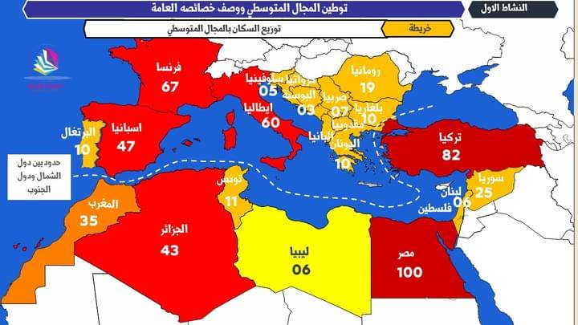
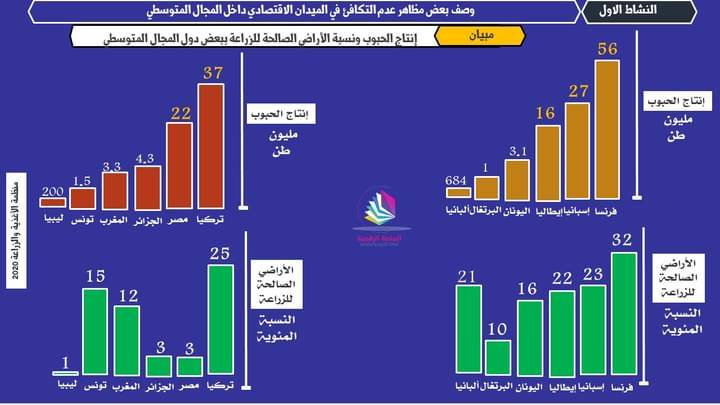

تفاوت النمو بين الشمال والجنوب(المجال المتوسطي نموذجا)
مقدمة :
يتميز العالم بتباين كبير بين الدول المتقدمة والدول النامية، على مستويات متعددة، ويعد المجال المتوسطي أنموذجا واضحا لهذا التباين .
فما هي خصائص المجال المتوسطي ؟ وما مظاهر التفاوت بين ضفتي المتوسط ؟ وما المجهودات المبذولة لتقليصه ؟
خصائص المجال المتوسطي ومؤهلاته
الامتداد الجغرافي للمجال المتوسطي
يمتد المجال المتوسطي على مساحة مهمة ، تشمل المناطق المحيطة بالبحر الأبيض المتوسط ، يتشكل من 22 دولة ، بعضها ينتمي للضفة الشمالية الأوربية (اسبانيا ، فرنسا ، ايطاليا ، اليونان ، قبرص ومالطا وبعض دول البلقان ) والبعض الأخر للضفة الإفريقية والأسيوية (دول شمال إفريقيا ، فلسطين ، سوريا لبنان ، تركيا ، إسرائيل ).
الخصائص المشتركة للمجال المتوسطي ومؤهلاته الاقتصادية


- الخصائص الطبيعية : يتميز المجال المتوسطي بمناخ متوسطي معتدل ومطير شتاء وحار وجاف صيفا ، وبتضاريس متنوعة تجمع بين الجبال والسهول . كما ينتشر في هذا المجال غطاء نباتي متوسطي يتميز بالتنوع والتدرج حسب الارتفاع ( الحوامض ، الزيتون ، الكروم ...) .
- الخصائص البشرية والتاريخية : يتميز المجال المتوسطي بارتفاع عدد السكان( حوالي 500 م ن)، وبعدة عادات وتقاليد متقاربة مشتركة مستمدة من الحضارات المتعاقبة على الفضاء المتوسطي كالحضارة الفنيقية، القرطاجية، الامازيغية، الإغريقية، الرومانية، الإسلامية ... كما يعد أيضا مهدا للديانات السماوية الثلاث ، مما يؤهله ليكون فضاء للتسامح والتعايش.
- المقومات الاقتصادية وفرة مصادر الطاقة والمعادن خاصة في جنوب وشرق المتوسط ، مساحة مهمة من الأراضي الخصبة ، الموقع الاستراتيجي في التجارة الدولية ، إذ توجد فيه أهم الممرات التجارية في العالم ( طارق – قناة السويس – الدردنيل - البوسفور )...
مظاهر التفاوت بين بلدان المجال المتوسطي
• على مستوى الاجتماعي : تتميز دول جنوب المتوسط بارتفاع التزايد الطبيعي ومعدل الخصوبة (2,1 الى3,5 طفل)، وبالتالي ارتفاع سريع في عدد السكان ، وهيمنة الفئة الشابة والنشيطة (أكثر من 30% أطفال)، مقابل ذلك ينخفض معدل الخصوبة في الضفة الشمالية (1.5 الى2 طفل) ، مما ساهم في تراجع النمو السكاني وشيخوخة المجتمع . كما ينخفض مؤشر التنمية البشرية في الضفة الجنوبية والشرقية إذ لا يتعدى 0.7 ، ويرتفع في دول الضفة الشمالية ليصل إلى 0.9.
• على مستوى المجال : تتكون دول شمال المتوسط من بلدان متقدمة ومندمجة في العولمة بشكل مستقل، في حين تتكون بلدان الجنوب من بلدان نامية أو في طور النمو، كما نجد دول الضفة الشمالية ذات مجال متطور ومنظم يتوفر على البنية التحتية والخدمات الأساسية، بينما نجد في الضفة الجنوبية سيادة مجال غير متطور أو في طور التطور ، يطغى عليه العشوائية ويفتقر للبنيات والخدمات الأساسية خاصة في المناطق القروية والجبلية.
• على المستوى الاقتصادي : تعاني دول الضفة الجنوبية من نقص الإنتاج الفلاحي وضعف التصنيع إضافة إلى قلة مساهمتها في التجارة الدولية، وانخفاض الناتج الداخلي الخام ، أما بالنسبة للضفة الشمالية فتتميز بقوة التصنيع خاصة الدول الكبرى (فرنسا ، ايطاليا ...) وتحقق فائض فلاحي وارتفاع حجم الناتج الداخلي الخام.
أهمية التعاون الأورمتوسطي حصيلته وآفاقة
تعمل دول المتوسط على تقوية التعاون في ما بينها ومن مظاهر ذلك، عقد مؤتمرات كمؤتمر برشلونة سنة 1995م لوضع أسس التعاون، إحداث منتدى 5+ 5، ثم اعتماد برامج للتنمية مثل برنامج ميدا ...
ترتب عن هذا التعاون تقديم دول الضفة الشمالية عشرات المليارات من الأورو لدول الجنوب لتمويل مشاريع في مجالات مختلفة اقتصادية واجتماعية وبيئية، مما انعكس إيجابا على مؤشرات التنمية بها، كما تسعى دول المتوسط إلى إنشاء منطقة للتبادل الحر تجمع الدول المتوسطية، وإقامة مشاريع مشتركة للطاقات المتجددة ...
لكن هناك عدة معيقات تحول دون ذلك منها تراجع المساعدات الأوربية بعد التوسع باتجاه أوربا الشرقية، الصراع العربي الإسرائيلي ، الصراع بين دول الضفة الجنوبية (المغرب والجزائر) ، غياب الديمقراطية واحترام حقوق الإنسان في الجنوب... مما ساهم في استمرار ظاهرة الهجرة السرية، تهريب المخدرات ، الاضطرابات السياسية ...
خاتمة :
رغم الخصائص الطبيعية والإرث التاريخي المشترك، والمؤهلات الاقتصادية التي يتوفر عليها المجال المتوسطي، إلا أن درجة التنمية الاقتصادية والبشرية لازالت متباينة بين ضفتيه الشمالية والجنوبية، مما يؤدي إلى استمرار مجموعة من التحديات التي يواجهها هذا الفضاء .